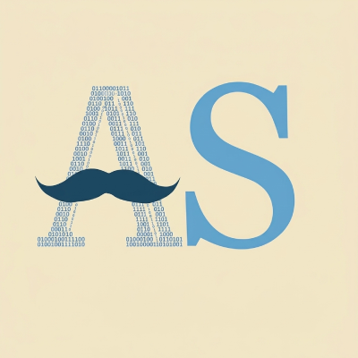

Je n'arrive pas à remonter à l'origine de cette idée de faire un portfolio. Une chose est sûr, c'est à Cybercap que j'ai compris la nécessité d'avoir un portfolio pour présenter mes projets et mes réalisations. Au fond de moi, j'espère aussi que ce portfolio me permettra de connecter avec d'autres 'nerds' qui partagent les mêmes intérêts que moi. Je suis fier de ce que j'ai accompli jusqu'à présent. Ce programme de 6 mois, Initiative Avenir, était ce qu'il me fallait à ce moment de ma vie pour me donner un coup de pouce pour avancer vers des horizons nouveaux de l'informatique et de la mathématique.